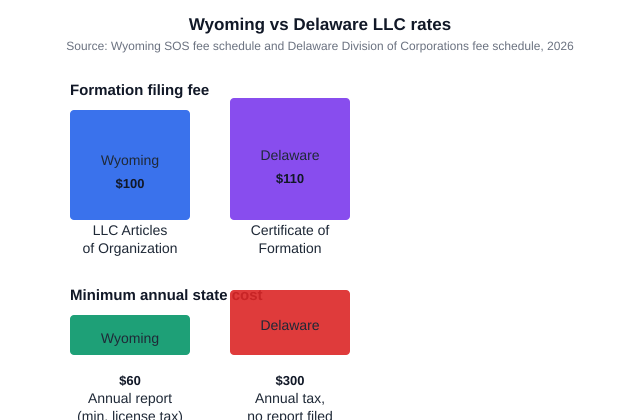

Wyoming vs Delaware LLC: Which One Should You Choose?
The short version
TL;DR: For most first-time founders, Wyoming is the cheaper and simpler choice. It costs $100 to form an LLC in Wyoming and a minimum of $60 a year after that. Delaware charges $110 to form and then $300 every single year, with no annual report required. The two reasons people still pick Delaware are its deep corporate law and its prestige with investors. If you are a software founder raising venture money, that matters. If you run a typical online or local business, you are probably paying extra for a name. Privacy also differs: Wyoming does not list your members and managers in the public record, while Delaware filings are public.Last updated: 2026-08-14. Prices and details verified against official sources.

What does it cost to form an LLC in each state?
The state charges are close at the start. Wyoming files a domestic LLC through its Secretary of State for a $100 articles of organization fee. Delaware's Division of Corporations lists a state filing fee of $110 for a domestic LLC certificate of formation, after its municipal fee is folded in. So Delaware is only $10 more on day one.
Both states require you to keep a registered agent with a physical in-state address. That is a separate, recurring cost that neither state collects directly, so it does not show up in the fees above. Plan for a registered agent charge no matter which state you choose.
What does each state charge you every year?
Here is where the gap opens up. Wyoming requires a yearly annual report with a license tax of $60 or two-tenths of one mill per dollar of assets located and employed in Wyoming, whichever is greater. For a new LLC with no Wyoming assets, you pay the flat $60 floor. It is due on the anniversary month of your formation, not on a fixed calendar date.
Delaware is different. An LLC does not file an annual report there at all, but it still owes a flat $300 annual tax every year, due by June 1. There is no tiering for small companies; it is $300 no matter the size.
Add it up: Wyoming costs $60 a year at minimum, Delaware costs $300 a year. That is a $240 yearly difference that compounds from year one.
Which state protects your privacy better?
This is the reason many online sellers and side-business owners choose Wyoming. Wyoming does not require LLC members or managers to be named in the public record. What the state keeps on file is your registered agent and your principal office, plus the basic articles. Your ownership and who manages the company live in the operating agreement, which you do not file with the state. People can search the Wyoming records and find your company, but they will not find your name attached as an owner.
Delaware runs the opposite way as a practical matter. Its public business records include the names and addresses connected to your filing, and anyone can look them up through the corporation records search. If keeping your name out of public view matters to you, Wyoming has the clearer edge.
Why do people choose Delaware anyway?
Delaware built its reputation over a century of corporate law. It has the Court of Chancery, a specialized court that decides business disputes quickly and with deep case law on its side. Venture investors and startup lawyers know Delaware entities well, and some investors prefer them. If you plan to raise institutional money, Delaware carries less friction in the term sheet and financing paperwork.
The trade-off is that this benefit matters most to companies that will actually hit those scenarios: venture funding, later-stage investors, or a possible sale where buyers are used to Delaware. If you are a solo founder doing ecommerce, consulting, or a local service business, you are unlikely to touch any of that. You would be paying the $300 annual tax for a benefit you never use.
Which should you pick?
When to pick Wyoming: You want the lower annual cost, you value privacy, and you do no business in Delaware. This covers most first-time founders, especially online and service businesses where your home state or a state like Wyoming gives you a cheaper, simpler setup.
When to pick Delaware: You are a funded or fundraising startup, you plan an exit where the buyer expects Delaware, or you simply want the state with the most corporate precedent on your side.
What else should I check before I decide?
A few practical points apply no matter which state you choose. First, forming in Wyoming or Delaware does not let you skip taxes in the state where you actually work. If you do business in California, you still deal with its franchise tax and registration. Second, your registered agent is a real recurring line item. Third, both states insist you also comply with federal and home-state reporting, so the state of formation is just one part of the setup.
- Total your year-one cost: formation fee plus a full year of the annual fee plus a registered agent.
- Ask honestly whether you will raise venture money or pursue a Delaware-style exit. If the answer is no, Wyoming usually wins on cost and privacy.
- Compare the annual bills: $60 minimum in Wyoming against $300 in Delaware.
- Weigh privacy. Wyoming keeps members and managers out of the public record; Delaware filings are public.
- Remember the state where you do business imposes its own requirements regardless of where you form.
FAQ
Is Delaware cheaper than Wyoming for an LLC?
No, not when you count the ongoing cost. Wyoming forms an LLC for $100 and charges a minimum of $60 a year. Delaware forms one for $110 and charges $300 a year. Over three years that is roughly $860 in Delaware against $280 in Wyoming before registered agent fees.
Does an LLC in Delaware file an annual report?
No. Delaware LLCs do not file an annual report. They pay a flat $300 annual tax by June 1 each year instead. Wyoming, by contrast, requires an annual report and a license tax of $60 at minimum.
Which state is better for privacy?
Wyoming, for most people. It does not list LLC members or managers in the public record, so ownership stays in the operating agreement. Delaware's public business records connect names and addresses to your formation.
Do I need a registered agent in both states?
Yes. Both Wyoming and Delaware require every LLC to maintain a registered agent with a physical in-state address. That is an added cost you pay regardless of which state you pick.
If I form in Wyoming or Delaware, do I skip taxes in my home state?
No. Where you form and where you do business are separate. Most states require a foreign registration and their own filings if you operate there. The state of formation handles LLC law and its own fees, not your home-state obligations.
Is Delaware worth it for a small business?
Usually not. Delaware's edge is corporate law depth and investor familiarity, which only really pay off for venture-backed or later-stage companies. A solo founder or small LLC typically ends up paying $300 a year for a benefit it never uses.
Fees verified against the Wyoming Secretary of State business fee schedule and the Delaware Division of Corporations fee schedule in 2026. Annual and filing rates can change, so confirm current numbers before you file.
Get our free LLC Formation Checklist
Step-by-step guide: state fees, timelines, EIN process, and the exact paperwork checklist. Used by 200+ founders.
Download Free Checklist